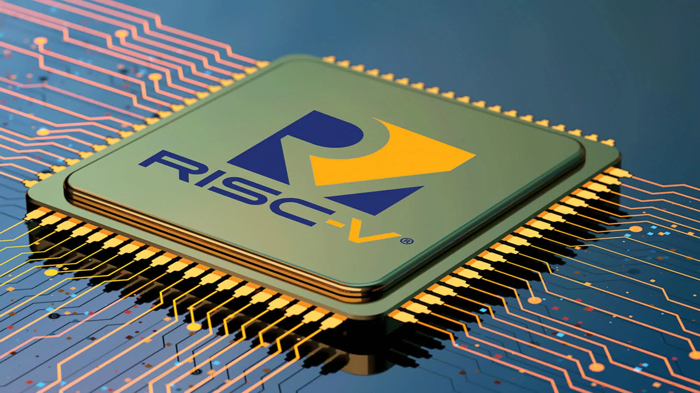

RISC-V – это открытая архитектура процессоров, разработанная в Калифорнийском университете в Беркли. Она основана на сокращенном наборе команд (RISC) и предоставляет возможность разработчикам создавать свои процессоры на основе этой архитектуры без покупки лицензий у крупных производителей процессоров.
RISC-V обладает несколькими преимуществами перед другими архитектурами. Во-первых, это открытая архитектура, способствующая инновациям и эффективному развитию процессоров.
Во-вторых, RISC-V имеет маленький набор команд, что делает его более эффективным. Сравнительно с другими архитектурами, RISC-V включает всего несколько базовых команд, что позволяет эффективно оптимизировать их под конкретные задачи.
В-третьих, архитектура RISC-V очень модульная, позволяя разработчикам создавать процессоры с нужными модулями. Это упрощает разработку и оптимизацию процессоров, а также снижает их стоимость.
RISC-V используется в различных областях, включая встроенные системы, серверы, суперкомпьютеры и мобильные устройства, представляя конкуренцию для традиционных архитектур ARM и x86.
Однако, на данный момент RISC-V находится на ранней стадии развития и имеет некоторые ограничения, включая нехватку специалистов, способных разрабатывать процессоры на основе этой архитектуры.